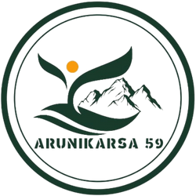
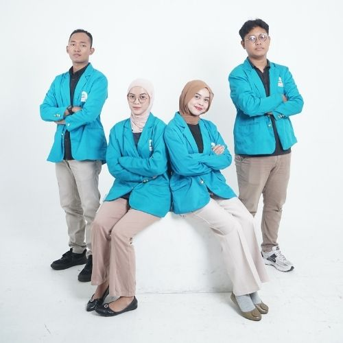
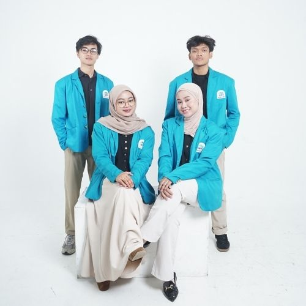
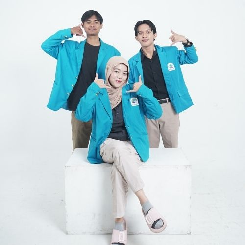
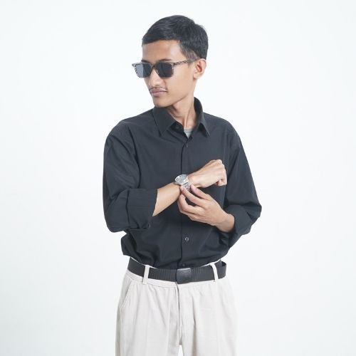
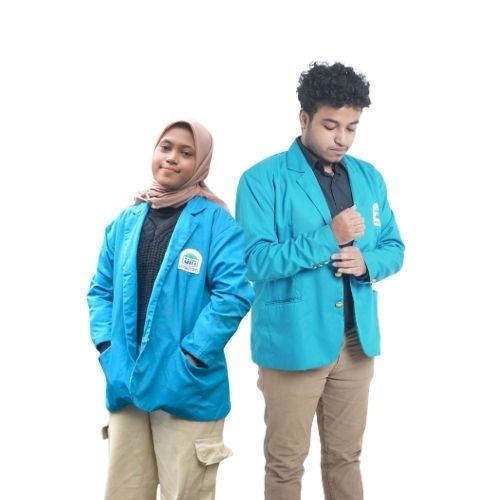
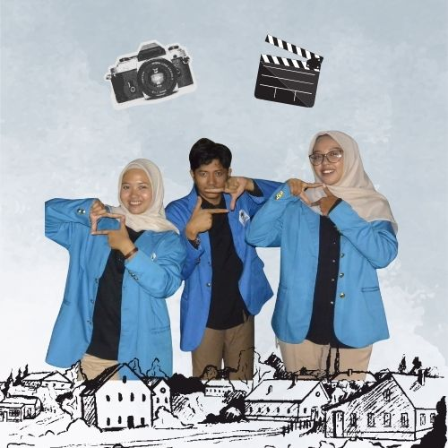
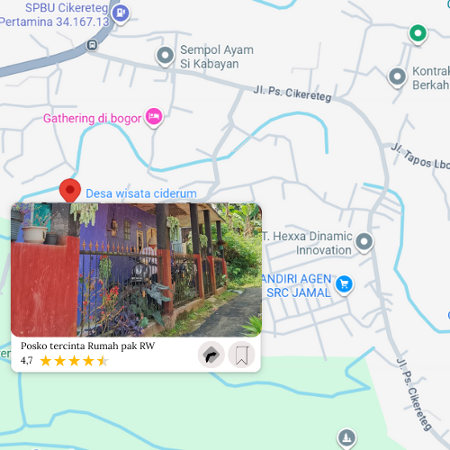
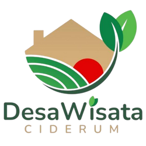

Wajib Ban Hero Martis Ali
Kami men declare kalo kami adalah kelompok terbaik se UINJKT, kata ketum kami. Arunikarsa, nama yang begitu kecilnya jika disandarkan untuk kami, karena kekeluargaan dan kekompakkan kami jauh lebih dari hanya sekedar nama.
Ketika matahari terbenam di atas Desa Ciderum, kami menyadari betapa kecilnya dunia ini, namun betapa eratnya ikatan yang terbentuk di antara kita. Seperti sebuah lukisan yang belum selesai, setiap goresan warna yang kami buat adalah bagian dari cerita yang terus berjalan. Kami terus mewarnai setiap momen, dengan harapan bahwa jejak yang kami tinggalkan akan menjadi pengingat, sebuah kenangan yang akan terus hidup dan mengingatkan kita pada kebersamaan yang indah ini.
Setiap orang punya Kuas dan Tinta yang berbeda, Kesukaan Warna dan Gaya yang bersebrangan. Maka nikmatilah sebuah lukisan sederhana ini







Lokasi Posko Tercinta Kami